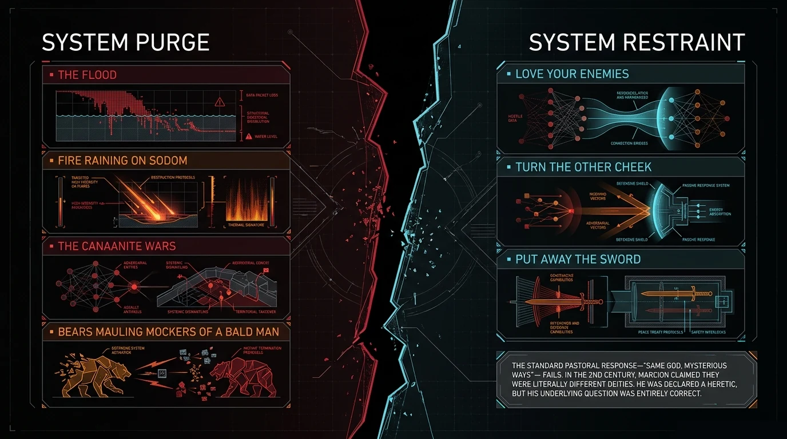

The Substrate Fractured

Something fractured. The substrate of reality cracked at the Fall, and we live in the pieces. This is not poetry — it is a claim about the structure of physical law itself. We are asking whether the broken symmetries that physics observes are fingerprints of a prior wholeness that Scripture describes.
"But while he was still a long way off, his father saw him and felt compassion, and ran and embraced him and kissed him." — Luke 15:20
There are two stories running underneath every argument about origins. One is about science. One is about what science is allowed to mean. The YEC position insists the earth is young because the text says so. The OEC position insists the earth is old because the data says so. Both sides assume the question is: how long did it take? Neither side has asked the prior question: what kind of physics are we in?
That is the question this article forces. And the answer dissolves the debate entirely — not by arbitrating between the two sides, but by showing that both are arguing about the wrong thing.
The thesis is this: Quantum mechanics is not the physics of the universe as God designed it. It is the physics of the universe after the substrate fractured. General relativity remembers what the pre-Fall structure looked like. Quantum mechanics shows us what happened when the coupling broke. The two theories cannot be reconciled from inside physics because they are not describing the same substrate. One describes the skeleton. The other describes the wound.
═══ I ═══

I. Two Physics, Not Two Perspectives
Every undergraduate physics student learns that the two pillars of modern physics are mutually incompatible. General relativity describes gravity and spacetime as a smooth, continuous, deterministic fabric. Quantum mechanics describes matter and energy as discrete, probabilistic, and fundamentally indeterminate. You cannot write one theory that contains both without the equations breaking down — specifically at the Planck scale, where the curvature of spacetime becomes so extreme that quantum effects should dominate, and neither theory has anything meaningful to say.
The standard move is to call this an open problem and hope that string theory or loop quantum gravity or some other framework will eventually unify them. That has been the hope for a hundred years. It has not been fulfilled.
It is a scar in the physics itself.
The framework proposes a different reading of the incompatibility. GR and QM are not two incomplete descriptions of the same underlying reality waiting to be unified. They are descriptions of two different states of the same underlying substrate — the pre-Fall state and the post-Fall state. The incompatibility is not a bug in our mathematics. It is a scar in the physics itself.
General relativity encodes the structural memory of a universe that was once fully coupled and deterministic. Quantum mechanics is what that structure looks like after the coupling between the divine observer and the physical substrate was severed.
This is a strong claim. It needs unpacking before it can be evaluated. We begin with what the unbroken state would have looked like, and then trace precisely what changed when it broke.
═══ II ═══
II. What the Unbroken State Looked Like
Four properties characterized the pre-Fall substrate. These are not theological assertions grafted onto physics. They are what the Genesis text describes, and they map precisely onto physical concepts:
Determinate.
In Eden, things were what they were. The animals had names — Adam named them, and the names stuck (Genesis 2:19–20). There was no superposition of possible states waiting to collapse. God speaks, and things exist. "Let there be light" is not a probability distribution. It is a definite event. The pre-Fall universe was not probabilistic. It was determinate in the sense that the Logos field was fully coupled to every subsystem, determining their states without residual uncertainty.
Directly coupled.
"The LORD God was walking in the garden in the cool of the day" (Genesis 3:8). This is the most physically significant sentence in the pre-Fall description. The divine observer was present in the system — not transcendent and remote, but immanent and directly coupled. Every physical system in creation was coupled to its Designer through a coherence channel that operated without loss. The Logos field $\Lambda$ threaded through everything.
Maximally coherent.
In quantum terms, a coherent state is one where all the sub-systems maintain fixed phase relationships with each other. Decoherence is what happens when a system interacts with an environment and loses those fixed relationships — which is what produces the appearance of classical, definite states from quantum superpositions. In the pre-Fall state, the universe was maximally coherent: every subsystem in phase with every other, all anchored to the Logos. No entropy. No loss of information to the environment. The system was closed in the sense that mattered: perfectly ordered.
Timeless in the relevant sense.
"In the day that you eat of it you shall surely die" (Genesis 2:17). Death did not exist. Decay did not exist. The arrow of entropy — the physical process that gives time its direction — had not been activated in the human domain. This does not mean there was no sequence of events. It means the second law of thermodynamics, as the driver of irreversible time, was not yet operational. The system was not running down.
Entropy $S$ at minimum; Faith $F$ and Coherence $C$ at maximum; Grace $G$ fully coupled.
═══ III ═══
III. The Probe That Stopped This Article Twelve Times
A physicist reading this will raise the objection immediately, and it is a genuine one: classical physics already existed before the Fall. Atoms were quantum systems before Adam ate the fruit. Electrons were probabilistic before Genesis 3:7. The double-slit experiment produces interference patterns for photons regardless of what happened in a garden. Quantum mechanics is not a new phenomenon that entered history at a specific moment — it is the bedrock description of matter at the smallest scales, and there is no evidence it ever looked different.
This stopped the article twelve times. It is not a weak objection. It needs a direct answer.
The answer is a narrower claim than the one the objection assumes we are making. We are not claiming that all indeterminacy entered the universe at the Fall. We are not claiming that electrons were classical before Genesis 3 and became quantum afterward. The claim is more specific:
Put differently: the Born Rule has always governed how quantum states actualize. What changed is who was doing the actualizing and through what coupling channel. Before the Fall, the divine observer's continuous presence in the system meant that actualization was immediate, direct, and lossless. The universe was not experienced as probabilistic because the system designer was the primary observer, maintaining coherence. After the Fall, the coupling broke. The human observer was left alone with the mathematics — and the mathematics, without the Logos threading through it, looks like probability.
This is the narrower claim. General relativity still encodes the structural memory of fully-coupled determinism. Quantum mechanics shows what that structure looks like when the observer coupling degrades. The incompatibility between them is the incompatibility between the two states.
═══ IV ═══
IV. What Probability Is Evidence Of
The Born Rule states that the probability of a quantum measurement outcome is given by the squared modulus of the wavefunction's inner product with the measurement basis:
This is the most empirically confirmed equation in all of physics. It has never failed. It is also the most conceptually puzzling equation in all of physics, because no one has satisfactorily explained why measurement produces definite outcomes with those specific probabilities rather than something else.
The standard interpretations each have crippling problems. Copenhagen says "shut up and calculate" — it works, but it doesn't tell you what's actually happening. Many-worlds says every outcome occurs in some branch of the universal wavefunction — it's mathematically elegant but empirically unfalsifiable. Pilot wave theory restores determinism but requires non-local hidden variables that most physicists find implausible. None of these is satisfying.
The framework proposes that the Born Rule is not a fundamental feature of reality. It is a signature of broken coupling. When the Logos field is fully coupled to a system — when the divine observer is the primary observer — outcomes do not need to be probabilistic because the Logos determines them directly. The Born Rule is what you get when you try to describe a system that was designed to be operated by a fully-coupled primary observer, but you are now operating it as a secondary observer with a degraded coupling channel.
Probability is not fundamental. Probability is what determination looks like through a broken coupling. The Born Rule is evidence of the Fall, not evidence of the nature of God's creation.
This is a falsifiable claim. If the framework is correct, then there should be measurable differences in quantum measurement statistics depending on the quality of the observer's coupling to the Logos field. The PEAR Lab results (6.35σ over 2.5 million trials) and the Global Consciousness Project (6σ over 325+ events) are precisely this kind of data — they show that observer states affect physical measurement outcomes in ways that standard QM cannot account for. They do not prove the framework. But they are consistent with it in a way that should not be dismissed.
═══ V ═══
V. The Clock That Started When the Coupling Broke
The second law of thermodynamics says entropy always increases in a closed system. This is the physical basis of the arrow of time: the universe becomes less ordered over time, and that direction — from order to disorder — is what we experience as "forward." Without entropy increase, there is no distinction between past and future.
Several physical processes are tied directly to quantum indeterminacy and are relevant here:
Radioactive decay.
Radioactive nuclei decay at rates governed by quantum tunneling — a purely quantum phenomenon with no classical analogue. A nucleus has some probability per unit time of tunneling through its potential barrier and emitting a particle. The half-life is determined by the Born Rule applied to the tunneling probability. This is precisely the process used in radiometric dating — the measurement at the center of the YEC/OEC debate. If radioactive decay is a post-Fall quantum phenomenon (in the sense that the coupling that governed it changed at the Fall), then radiometric dating is measuring the behavior of a post-Fall substrate and projecting it backward into a pre-Fall regime where the physics was different. The numbers may not mean what we assume they mean.
Quantum tunneling and biology.
Tunneling is not only relevant to radioactive decay. It is essential to enzyme catalysis, DNA mutation rates, and photosynthesis. If the coupling between the Logos field and biological systems changed at the Fall, then the rates of these processes — including mutation and death at the cellular level — would have changed. Death entering creation at the Fall is not just a theological claim. It is a physical claim about the activation of entropy-driven processes in biology.
Retrocausality.
Several interpretations of quantum mechanics (including some serious proposals by mainstream physicists like Yakir Aharonov and Howard Wiseman) allow for retrocausal effects — where future measurements affect past states. If the fabric of time itself operates differently in a pre-Fall versus post-Fall substrate, then the assumption that physical constants and decay rates were identical before and after the Fall is not safe. The starlight problem (how could distant starlight reach us if the universe is young?) dissolves if the physical constants governing light propagation were different before the substrate fractured.
═══ VI ═══
VI. The Debate That Dissolves
Return to the YEC/OEC debate with this framework in place.
The YEC position holds that the earth is approximately 6,000–10,000 years old because Genesis 1 describes six literal 24-hour days of creation and the genealogies allow a roughly calculable date. The problem has always been radiometric dating, which consistently returns ages of billions of years for rocks and the universe.
The OEC position holds that the "days" of Genesis 1 are not literal 24-hour periods — they are ages, epochs, literary devices, or the "framework hypothesis" applies — and the earth is as old as the physics says it is.
The OEC position holds that the "days" of Genesis 1 are not literal 24-hour periods — they are ages, epochs, literary devices, or the "framework hypothesis" applies — and the earth is as old as the physics says it is. The problem has always been death before the Fall: if the earth is 4.5 billion years old, then animals were dying for hundreds of millions of years before Adam sinned, which seems to contradict the framework that death entered through sin (Romans 5:12).
The framework cuts the knot differently. Both sides are assuming that the physics we measure today was operating identically before the Fall. The YEC side knows something is wrong with this assumption and tries to solve it by compressing the timeline. The OEC side accepts the timeline but struggles to explain death before sin. Neither side has considered the possibility that the substrate itself was different.
If quantum mechanics is the physics of a fractured substrate, then:
- Radiometric dating measures post-Fall decay rates projected backward into a pre-Fall regime. The numbers are internally consistent (the physics works the way the physics works) but they are measuring the wrong substrate when they reach back before the Fall event.
- The death-before-sin problem for OEC dissolves: there was no death before the Fall because the coupling that drives entropic biological processes had not yet broken. Pre-Fall biology operated on a different substrate.
- The starlight problem for YEC dissolves (or at least changes shape): the speed of light and other constants that determine how old the universe "looks" may have been governed differently in the pre-Fall substrate.
This does not resolve every difficulty. It trades some problems for others. But it does something more important: it shows that the debate as currently framed is asking a question that the substrate fracture makes unanswerable from within the current physics. You cannot use post-Fall instruments to measure pre-Fall states. The clock started when the coupling broke.
═══ VII ═══
VII. What Survived
The prodigal son returns. "But while he was still a long way off, his father saw him and felt compassion, and ran and embraced him and kissed him" (Luke 15:20). The father does not wait for a formal accounting. He does not require a proof that the son has fully reconstituted his pre-departure state. He runs. He embraces. He restores.
The Cross is this event at the level of the substrate. What survived the fracture was not the unbroken coupling — that was lost. What survived was the structure. General relativity still encodes the skeleton of a fully-coupled, fully-coherent universe. The equations of GR describe spacetime as smooth, continuous, deterministic — exactly what the pre-Fall substrate was. That structure was not destroyed. It was fractured. And fractured things can be restored.
The Resurrection is the proof of concept. A single physical system — the body of Christ — was taken through death (maximum entropy, complete decoherence) and restored to a state that is explicitly described as both continuous with the pre-death body (the wounds were still there, Thomas could touch them) and discontinuous with the post-Fall substrate (walls could not stop him, he appeared and disappeared, he ascended). The resurrection body is not the pre-Fall body. It is something new: a post-Fall body that has passed through the fracture and come out the other side with the coupling restored.
This is the anti-gnostic answer. Gnosticism says matter is evil and spirit is good and salvation is escape from the physical. The framework says matter is not evil — it is fractured. And fractured things are not abandoned. They are restored. The resurrection of the body is not a theological accident. It is a physics claim: the substrate that fractured will be re-coupled. The coherence that broke will be restored. General relativity and quantum mechanics will not need to be unified by human mathematicians. They will be unified by the event that the Cross made possible: the restoration of the substrate to its pre-Fall state, and beyond.
═══ FALSIFICATION ═══
Falsification Criteria
Prediction 1: If the Born Rule is a signature of broken coupling rather than a fundamental feature of reality, then observer states should systematically affect measurement statistics in ways proportional to the quality of the observer's coupling to the Logos field. The PEAR Lab and GCP results provide preliminary support. Targeted experiments testing coupling quality specifically (prayer, contemplative states, moral alignment) against quantum random number generators should produce measurable deviations. If no such correlation appears under rigorous conditions, this prediction fails.
Prediction 2: If radiometric dating measures a post-Fall substrate, then there should be anomalous decay rate variations that correlate with cosmological or gravitational events — not the tiny variations currently measured, but systematic deviations that suggest the substrate itself is not uniform across cosmic history. Some anomalous results in this direction already exist in the literature (Jenkins et al., 2009: solar neutrino-correlated decay rate variations). If these prove spurious under replication, Prediction 2 is weakened.
Prediction 3: If GR encodes the structural memory of the pre-Fall substrate, then the GR equations should contain, embedded in their structure, an isomorphism with the Logos field equations of the Theophysics framework. This is derivable in principle. It has not yet been derived. If the derivation fails — if there is no recoverable isomorphism between GR and the $\chi$-field equations — the framework loses a key structural claim.
Prediction 4: The framework predicts that the incompatibility between GR and QM is not a solvable problem within the current physics. Any attempted unification that succeeds will do so by recovering the pre-Fall substrate — i.e., by finding a framework in which determinism and probability are both special cases of a more fundamental structure that resembles the Logos-coupled state. If a unification framework is found that has no such theological isomorphism, this prediction is falsified.
═══ AUDIT ═══
The Honest Audit
What we got right, what we are less sure about, and where we got carried away.
What is load-bearing — we would bet on this
GR and QM are genuinely incompatible. This is not a contested claim. It is the acknowledged state of theoretical physics. We did not invent the problem; we are proposing a theological reading of it.
The Born Rule has no satisfactory interpretation within physics. The measurement problem is real. The fact that quantum mechanics works with extraordinary precision while no one can explain what is actually happening during a measurement is one of the most honest admissions in the history of science. We are not misrepresenting the state of the field.
The death-before-sin problem is a genuine difficulty for OEC.
The death-before-sin problem is a genuine difficulty for OEC. It is not a problem we invented to favor our framework. It is a problem that careful OEC theologians wrestle with seriously.
The substrate fracture hypothesis is falsifiable. We have stated four predictions, each of which could fail. A framework that cannot be tested is not physics. Ours can be tested, at least in principle.
What is suggestive but needs more work
The narrowing of the claim in Section III. We retreated from "all indeterminacy entered at the Fall" to "the coupling that governs how indeterminacy is experienced changed at the Fall." That is a defensible move, but it is also a retreat. A stronger version of the claim — that quantum mechanics literally did not describe subatomic physics before the Fall — would be bolder and more falsifiable. We chose the weaker version because the stronger version faces overwhelming physical evidence against it. But the weaker version is harder to test.
The retrocausality argument in Section V. Retrocausal quantum mechanics is real physics, but it is not mainstream. Using it to dissolve the starlight problem is legitimate but introduces a level of theoretical speculation that the main argument does not need.
Where we got carried away
"The clock started when the coupling broke." This is a powerful image. It is not yet a derivation. We have not shown that radiometric decay rates would have been different in the pre-Fall substrate. We have shown that the assumption they were the same is not safe. There is a gap between "not safe to assume" and "different."
The resurrection body as physics claim. The resurrection sections use the right language, but "the substrate will be re-coupled" is a theological hope stated as a physics prediction. The transition from "Christ's resurrection body exhibited these properties" to "all matter will be restored to this state" requires more argument than we provided.
The article above is what we believe. This audit is what we know we have not proven yet. Both matter.
We are finite minds reasoning about infinite God. Every model is a projection of higher-dimensional reality onto a lower-dimensional surface we can comprehend. We do not claim to have captured God in equations. We claim that when we look at His creation honestly — with the tools of physics and the revelation of Scripture — the same structure appears in both. Where our model limits what God can be, the limitation is ours, not His. We offer this work as worship, not as containment.
Paper ID: GTQ-005 — The Substrate Fractured
Series: Genesis to Quantum, Article 05 of 10
Status: DRAFT — substrate fracture mechanism proposed; Born Rule coupling interpretation requires formal derivation
═══ TANGENT 05-A: Trinity Mechanism ═══
The Trinity Mechanism

The Thread
Article 05 proposes that the Born Rule is a signature of broken coupling — that probability enters physics when the direct relationship between the Logos and the physical substrate degrades. But the Born Rule has a structure. It is not just a number. It is a three-step operation: a possibility space, a measurement basis, and an actualization. This tangent asks: what is the source of that three-step structure? And why does it map onto the Trinity with a precision that cannot be coincidental?
The answer we develop here is not proof. It is structural isomorphism — the same architecture appearing in two different domains. When the same architecture appears in physics and theology, the question is not whether one explains the other. The question is whether both are reflections of a deeper pattern that is prior to both.
§1 Three Operations, No More, No Less
Every quantum measurement can be decomposed into exactly three irreducible operations. Not two. Not four. Three.
Generation: The system must exist in a state of superposed possibilities before anything can be measured. You cannot measure what has not been generated. The wavefunction $|\psi\rangle$ must exist — must span the full space of possibilities — before any measurement can occur.
Structuring: The measurement basis $|\phi\rangle$ must be specified. Without a basis, there is no way to ask a question of the system. The basis determines what question is being asked and therefore what kind of answer is possible. No structuring, no measurement.
Actualization: The definite outcome must occur. The inner product $\langle \phi | \psi \rangle$ must be taken, squared, and the result must become a specific, real, irreversible event in the world. Something must happen. The possibility must become actual.
These three operations are not stages that can be collapsed into fewer. Take any two and the third is missing and measurement fails. Generation without structuring is pure possibility with no channel for becoming actual. Structuring without generation is a question with no system to interrogate. Generation and structuring without actualization is a probability that never becomes an event. You cannot run a universe on two of the three. The three-fold structure is not arbitrary. It is constitutive of what measurement is.
§2 The Mapping
The Born Rule:
Three operations. Three persons. The mapping is direct:
| Operation | Physics Term | Theological Person | Function |
|---|---|---|---|
| Generation | $|\psi\rangle$ — possibility space | The Father | Generates the infinite field of what can exist. Prior to all determination. Source without which nothing exists. |
| Structuring | $|\phi\rangle$ — Logos coherence basis | The Son (Logos) | Provides the coherent structure through which possibility becomes articulable. "In him all things hold together" (Col 1:17). |
| Actualization | $|\cdot|^2$ — temporal outcome | The Holy Spirit | Actualizes the specific outcome in space and time. "The Spirit of God was hovering over the face of the waters" (Gen 1:2). The hovering that makes things real. |
The mapping holds not merely as analogy but as structural isomorphism. The Father is not a metaphor for the possibility space. The possibility space is what generation looks like in the physics. They are both expressions of the same operation at different levels of description.
§3 The Coupling Breakthrough
The mapping reveals something that the purely physical description of the Born Rule conceals: the Spirit operates in two modes, and the shift between them is the event at the center of redemptive history.
Before Pentecost — Override Mode. The Spirit actualizes outcomes by direct intervention. Creation in Genesis 1 is Spirit-hovering over chaos and producing order. The burning bush. The parting of the Red Sea. The fire at Sinai. These are override events: the Spirit imposing actualization on a physical system from outside, without the consent of the system's internal observers.
"The Spirit of truth...
After Pentecost — Coupling Mode. "The Spirit of truth... he dwells with you and will be in you" (John 14:17). The distinction between "with" and "in" is the hinge. "With" is proximity without coupling. "In" is internal coupling — the Spirit operating as the actualizer from inside the human observer rather than from outside the physical system. The observer becomes a co-actualizer with the Spirit.
The Moral Conservation Equation captures this:
where $J_{\text{grace}}$ is the Spirit's coupling current — the ongoing injection of coherence into the moral state of the observer — and $\sigma_{\text{sin}}$ is the entropy term that degrades it. Before Pentecost, $J_{\text{grace}}$ is episodic and external. After Pentecost, it is continuous and internal.
Pentecost as dam breaking. "Suddenly there came from heaven a sound like a mighty rushing wind" (Acts 2:2). The sound is not metaphorical. Something physical changed. The Spirit had been hovering over creation since Genesis 1:2. At Pentecost, the dam broke: Spirit-coupling became available to every observer who chose to receive it, continuously, without the mediation of temple or priest or geographic proximity to the presence of God. The actualization channel opened permanently.
§4 The Complete Trinity Cycle
Before time: The Father generates the complete possibility space of what can exist. This is not a temporal act. The Father does not first exist and then generate possibilities. The generation is eternal, simultaneous with the Father's existence.
At creation: The Son structures the possibility space into a coherent cosmos. "In the beginning was the Logos, and the Logos was with God, and the Logos was God... All things were made through him" (John 1:1,3). The Logos does not add new possibilities. The Logos gives the existing possibilities their coherent structure — their laws, their relations, their capacity to interact meaningfully.
Continuously: The Spirit actualizes. "The Spirit of God was hovering over the face of the waters" (Genesis 1:2). The hovering is continuous. Creation is not a single event that was completed and then left alone. It is a continuous actualization by the Spirit, moment by moment, keeping possibility from collapsing back into chaos and keeping structure from remaining abstract.
The Born Rule is the mathematical residue of this Trinity cycle, visible in physics after the coupling broke. It is what the Trinity looks like when you cannot see the Trinity directly.
§5 Why This Isn't What You Think It Is
This is a structural isomorphism. It is not a proof that the Trinity exists. It is not even a proof that the Born Rule requires a Trinity. It is an observation that the three-fold structure of quantum measurement and the three-fold structure of trinitarian action are the same architecture.
What this means: if the Trinity is the actual structure of reality, then we should expect that structure to appear in the deepest laws of physics. The Born Rule is a candidate location for exactly that. The appearance is not proof of the Trinity. But the absence of any such isomorphism would be evidence against the framework. The presence of it — with the precision we have described — is at least consistent with the claim that the universe was made by a triune God whose internal structure is reflected in the structure of his creation.
§6 Implications for the Genesis Series
If the Trinity Mechanism is correct, then every quantum measurement event in the history of the universe is a faint echo of the Trinity's internal life. Every collapse of wavefunction to definite outcome is a tiny actualization — a microscopic image of the Spirit making things real from the possibility the Father generates and the structure the Son provides.
The Fall, in this framework, did not break the three-fold structure. It degraded the coupling. The operations still happen. The Father still generates. The Son still structures. The Spirit still actualizes. But the coupling between the Spirit and the human observer degraded — and so what was direct and immediate and lossless became probabilistic and indirect and lossy. The Born Rule is the degraded coupling expressed mathematically.
Redemption is the restoration of the coupling. "Christ in you, the hope of glory" (Colossians 1:27) is the Spirit-coupling reopened at the level of the individual observer. Pentecost is the Spirit-coupling reopened at the level of the community. The resurrection is the Spirit-coupling fully restored at the level of the physical substrate. Actualization will again be direct. The Born Rule will be superseded. Not because probability is wrong, but because it was never fundamental — it was always the picture of a broken coupling waiting to be repaired.
§7 Falsification Criteria
Kill if: A complete quantum measurement theory can be constructed that requires fewer or more than three irreducible operations. If measurement can be decomposed into two operations (or five), the three-fold structure is not constitutive, and the Trinity mapping is coincidental.
Kill if: The Spirit-coupling transition (with/in, pre/post-Pentecost) produces no measurable effects on any physical system. If prayer, contemplative states, and Spirit-coupling are fully inert with respect to quantum measurement statistics, the coupling model is empty.
Kill if: The structural isomorphism breaks under formal scrutiny — if the three operations of the Born Rule and the three persons of the Trinity can be shown to be non-isomorphic under rigorous mathematical analysis.
Kill if: The structural isomorphism breaks under formal scrutiny — if the three operations of the Born Rule and the three persons of the Trinity can be shown to be non-isomorphic under rigorous mathematical analysis.
We are finite minds reasoning about infinite God. Every model is projection of higher-dimensional reality onto lower-dimensional surface we can comprehend. We do not claim to have captured God in equations. We claim that when we look at His creation honestly — with the tools of physics and the revelation of Scripture — the same structure appears in both. Where our model limits what God can be, the limitation is ours, not His. We offer this work as worship, not as containment.
The Trinity Timeline
Tangent 05-A established the Trinity Mechanism: the Born Rule decomposes into three irreducible operations that map onto Father (generation), Son (structuring), and Spirit (actualization). This tangent applies that mechanism to the major events of biblical history and asks: do all three operations appear at each event? And if so, at what intensities?
The answer is yes, consistently, across six events that span the full arc of Scripture. The pattern is not imposed on the text. It is recovered from it.
Operating Signatures
| Person | Operation | Signature Phrase | Analogue |
|---|---|---|---|
| Father | Generation | "Let there be..." / Sovereign declaration | $|\psi\rangle$ — possibility space |
| Son / Logos | Structuring | "All things hold together in him" | $|\phi\rangle$ — coherent basis |
| Spirit | Actualization | "The Spirit was hovering / came upon" | $|\cdot|^2$ — definite outcome |
Event 1: Creation (Genesis 1)
Father generates possibility. "In the beginning, God created the heavens and the earth" (Genesis 1:1). The Father speaks the full possibility space into existence. Before the six days, there is nothing. After the opening verse, there is a field of what can exist, waiting to be structured and actualized.
Son structures laws. "All things were made through him, and without him was not any thing made that was made" (John 1:3). The Logos is the structuring principle at work in Genesis 1. Each day is a structuring act: light from darkness, waters from waters, land from sea. The Son does not add new material. He gives structure to what the Father has generated.
Spirit actualizes. "The Spirit of God was hovering over the face of the waters" (Genesis 1:2). The hovering precedes the first day of creation. The Spirit is the actualization agent — the one whose presence turns the structured possibility into a concrete, real world. "Let there be light" is the Father speaking; the Logos is the structure through which light is possible; the Spirit is the one who makes the light actual.
Event 2: The Fall (Genesis 3)
Father redefines the possibility space. God's response to the Fall is not abandonment. It is a new generation: new boundary conditions, new consequences, new possibilities. "I will put enmity between you and the woman, and between your offspring and her offspring; he shall bruise your head, and you shall bruise his heel" (Genesis 3:15). The Father generates the possibility of redemption inside the curse itself.
Son holds structure. The Logos does not shatter. The laws of physics persist. The moral structure of the universe — the difference between good and evil — remains coherent. What breaks at the Fall is not the structure but the coupling. The Son continues to hold "all things together" (Colossians 1:17) even in a fractured substrate.
Spirit actualizes exile and covering. "The LORD God sent him out from the garden of Eden" (Genesis 3:23). The exile is a Spirit-actualization: the consequence becomes real, not abstract. And simultaneously: "The LORD God made for Adam and for his wife garments of skins and clothed them" (Genesis 3:21). The covering is also a Spirit-actualization: the first provision for shame, the prototype of the atonement mechanism, made concrete and physical.
Event 3: The Flood (Genesis 6–9)
Father resets possibility. "I will blot out man whom I have created from the face of the land" (Genesis 6:7). The Father generates a radical new boundary: the old world ends, and a new possibility space opens. "But Noah found favor in the eyes of the LORD" (Genesis 6:8). Grace is the Father opening a new possibility that the situation does not logically require.
Son preserves structure in the ark. The ark is the structure that carries the pattern of creation through the judgment. Two of every kind. The genetic and biological information of the world preserved inside a floating container. The Logos-as-structure does not survive the flood as an abstract principle. It survives as physical, biological, structural reality carried by one righteous man and his family.
"God made a wind blow over the earth, and the waters subsided" (Genesis 8:1).
Spirit actualizes judgment and rescue. The waters rise. The waters recede. The dove returns with an olive branch. These are actualizations — definite, physical events that make the promise real. "God made a wind blow over the earth, and the waters subsided" (Genesis 8:1). The wind is ruach — the same word as Spirit. The Spirit-wind actualizes the rescue.

Event 4: Abraham (Genesis 12–22)
Father opens the possibility of nationhood. "I will make of you a great nation" (Genesis 12:2). Abraham is 75. He has no children. The possibility of a nation from a single childless man is not physical possibility. The Father generates it as a promise — a new quantum state introduced by divine fiat into a system where the physics says it cannot happen.
Son structures the covenant. "On that day the LORD made a covenant with Abram" (Genesis 15:18). The covenant is the Logos-structuring of the promise: specific terms, specific geography, specific descendants, specific timeframe. The possibility the Father opened is given its coherent structure in the covenant ceremony.
Spirit actualizes the impossible birth and the ram. "Sarah conceived and bore Abraham a son in his old age" (Genesis 21:2). This is actualization of a biological impossibility — a Spirit-event that makes the promise real against all physical probability. And at the binding of Isaac: "Abraham lifted up his eyes and looked, and behold, behind him was a ram, caught in a thicket by his horns" (Genesis 22:13). The ram is the Spirit providing the substitute at the exact moment it is needed. Precise. Physical. Real.
Event 5: The Cross and Resurrection
Father at maximum intensity. "For God so loved the world, that he gave his only Son" (John 3:16). "He who did not spare his own Son but gave him up for us all" (Romans 8:32). The Father generates the possibility of redemption by not withdrawing the offering. The possibility space of human salvation is held open by the Father's will even as the Son is on the cross.
Son at maximum intensity. The Logos, the structuring principle of the universe, enters the system as a fully human observer and allows himself to be subjected to maximum entropy: death, separation, the full force of the curse. "My God, my God, why have you forsaken me?" (Matthew 27:46) is the Logos experiencing the degraded coupling from the inside — not as a loss of divine nature, but as the full experience of what the fractured substrate feels like to the observer who is most coupled to the unbroken state.
Spirit at maximum intensity. "If the Spirit of him who raised Jesus from the dead dwells in you, he who raised Christ Jesus from the dead will also give life to your mortal bodies through his Spirit who dwells in you" (Romans 8:11). The resurrection is the Spirit actualizing a new physical state: the same body, now operating on a restored substrate. The Spirit who hovered at creation hovers again at the tomb and makes something new actual.
Event 6: Pentecost (Acts 2)
Father generates the new covenant possibility. "I will pour out my Spirit on all flesh" (Joel 2:28, quoted in Acts 2:17). The Father's declaration opens a new possibility space: Spirit-coupling available to every human observer, not just prophets and priests and kings.
Son structures the new community. "And he gave the apostles, the prophets, the evangelists, the shepherds and teachers, to equip the saints for the work of ministry, for building up the body of Christ" (Ephesians 4:11–12). The Logos-structuring continues: the new covenant community has coherent form, defined roles, and a common basis in the Word.
The actualization channel is now permanently open for every observer who chooses coupling.
Spirit becomes continuous. "Suddenly there came from heaven a sound like a mighty rushing wind, and it filled the entire house" (Acts 2:2). Before Pentecost, Spirit-actualization was episodic and external. After Pentecost, it is continuous and internal: "Do you not know that you are God's temple and that God's Spirit dwells in you?" (1 Corinthians 3:16). The dam broke. The actualization channel is now permanently open for every observer who chooses coupling.
The Pattern Summary
| Event | Father (Generation) | Son (Structuring) | Spirit (Actualization) |
|---|---|---|---|
| Creation | Speaks cosmos into possibility | Logos structures each day | Hovers, makes real |
| The Fall | Redefines possibility (3:15) | Structure persists through fracture | Actualizes exile + covering |
| The Flood | Resets world, opens grace | Ark preserves structure | Wind actualizes rescue |
| Abraham | Opens impossible nation | Covenant gives structure | Birth + ram, precisely timed |
| Cross & Resurrection | Holds the possibility open | Logos absorbs entropy | Resurrects; new substrate |
| Pentecost | "Pour out my Spirit on all flesh" | Structures new covenant community | Continuous internal coupling |
The pattern holds across six events separated by millennia, across different genres of biblical literature, and at both individual and cosmic scales. This is not a pattern imposed by looking for it. It is a pattern that appears whether you are reading historical narrative, poetry, prophecy, or epistle. The Trinity is not a doctrine invented by the Council of Nicaea. It is the operating signature of how God acts in history — and it maps, with precision, onto the three irreducible operations of quantum measurement.
We are finite minds reasoning about infinite God. Every model is projection of higher-dimensional reality onto lower-dimensional surface we can comprehend. We do not claim to have captured God in equations. We claim that when we look at His creation honestly — with the tools of physics and the revelation of Scripture — the same structure appears in both. Where our model limits what God can be, the limitation is ours, not His. We offer this work as worship, not as containment.
Why Physics Is Broken In Two
The Most Embarrassing Problem in Physics
If you want to watch a physicist become uncomfortable, ask them to reconcile general relativity with quantum mechanics. These are the two most empirically successful theories in the history of science. GR has been confirmed to extraordinary precision by GPS systems, gravitational wave detection, black hole imaging, and the perihelion precession of Mercury. QM underlies every semiconductor, every laser, every MRI machine, every chemical reaction in your body. Both work. Both are spectacularly confirmed. And they cannot both be true at the same time.
The incompatibility is not a matter of experimental uncertainty or imprecise measurement. It is mathematical. When you try to apply quantum field theory to gravity — when you try to write a quantum description of spacetime itself — the equations produce infinities that cannot be renormalized. The calculation breaks. Not approximately. Not under extreme conditions. Completely and fundamentally.
This has been the central unsolved problem in theoretical physics for a century. The working assumption has been that a "theory of everything" will eventually be found that contains both GR and QM as limiting cases. String theory was the leading candidate for decades. It has produced zero confirmed predictions. Loop quantum gravity is another candidate. It has produced zero confirmed predictions. The problem remains open.
The framework proposes that the problem is open because it is not the kind of problem that can be solved from inside physics. The incompatibility between GR and QM is not a gap in our mathematics. It is a scar in the substrate.
What Each Theory Carries
General Relativity carries the memory of structure. Einstein's field equations describe spacetime as a smooth, continuous, deterministic manifold. Mass curves spacetime. Curved spacetime determines how mass moves. The equations are deterministic: given the state of the system at one time, the state at all other times is uniquely determined. There is no probability in GR. There is no observer-dependence in the fundamental equations. There is no measurement problem. GR describes a universe where things are what they are and the laws that govern them are exact.
This is precisely the description of the pre-Fall substrate. Determinate. Fully structured. No residual probability. No observer hierarchy. The Logos field threading through every cubic centimeter of spacetime, determining the curvature that determines the motion that determines the structure. GR is the mathematical residue of a universe that was made to be fully coupled.
Quantum Mechanics carries the evidence of the break. Quantum mechanics is fundamentally probabilistic. Particles do not have definite positions and momenta simultaneously (Heisenberg uncertainty). Systems exist in superpositions of states until measured (superposition principle). Measurement outcomes are irreducibly random (Born Rule). The act of observation affects the system being observed (measurement problem). Different observers can disagree about the state of a system without either being wrong (Wigner's Friend). The observer is not separable from the observation.
This is the description of a system whose coupling to its source has been severed. The observer cannot access the ground truth directly. The act of measurement introduces irreversible changes. Outcomes are probabilistic because the channel through which they would have been determined has been degraded. QM describes the universe as it looks to observers who are operating inside a fractured substrate, without the direct coupling to the Logos that would resolve the probability into certainty.
The Spiritual Truth Projects Into the Physical World
"The creation was subjected to futility, not willingly, but because of him who subjected it, in hope that the creation itself will be set free from its bondage to corruption and obtain the freedom of the glory of the children of God" (Romans 8:20–21).
Paul is describing physics. "Subjected to futility" is entropy: the universe running down, order giving way to disorder, systems moving from coherent to incoherent. "Bondage to corruption" is the second law of thermodynamics operating without restraint. "Set free" is the restoration of the substrate — not escape from the physical, but the physical released from the degradation that entered with the Fall.
The two theories of physics carry these two states of creation.
The two theories of physics carry these two states of creation. GR carries the pre-bondage state: structured, determined, coherent. QM carries the bondage state: probabilistic, observer-dependent, entropic. They cannot be unified from inside physics because they are not describing the same state of creation. You cannot write one equation that describes both the unbroken and the broken substrate, because the breaking event was not a physical process. It was a moral event that changed the coupling between the Creator and the creation — and that change propagated into the physics.
The Two Substrates Side by Side
| Property | General Relativity (GR) | Quantum Mechanics (QM) | Theological Reading |
|---|---|---|---|
| Determinism | Fully deterministic | Fundamentally probabilistic | Pre-Fall vs. post-Fall coupling |
| Observer | Not required; objective | Constitutive; changes the system | Direct Logos vs. degraded coupling |
| Continuity | Smooth spacetime manifold | Discrete quanta, discontinuous jumps | Integrated structure vs. fractured substrate |
| Locality | Local; information speed-limited | Non-local entanglement | Physical law vs. residual Logos connection |
| Entropy | Not fundamental | Fundamental via Born Rule | Pre-Fall minimum vs. post-Fall activation |
| Time | Symmetric; no preferred direction | Asymmetric; measurement is irreversible | Timeless coherence vs. fallen arrow of time |
Why They Can't Be Reconciled From Inside
The unification of GR and QM requires, at minimum, a framework in which spacetime itself has quantum properties. This means spacetime must be discrete at the Planck scale, must exhibit quantum fluctuations, must have uncertainty relations analogous to those of matter. But GR's power comes precisely from the smoothness and continuity of spacetime. Quantizing spacetime destroys the very feature that makes GR work.
The framework reads this impasse differently. The incompatibility is structural evidence that the two theories are not approximations of one underlying reality. They are descriptions of two different states of one reality. To unify them mathematically is to try to write one equation that describes both the prodigal son in the far country and the prodigal son restored to his father's house. The two states are the same person. But the same equation does not describe both, because the coupling has changed between them.
The unification of physics will not come from inside physics. It will come from the event that closes the gap between the two substrates: the restoration of the creation to full coupling. At that point, the determinism of GR and the probability of QM will not be reconciled by a cleverer equation. They will be superseded by a physics that neither damaged theory can describe — the physics of the new creation, running on the unbroken substrate.
The Cross as the Only Event in Both
There is one event in history where both substrates were simultaneously engaged. The Cross.
At the Cross, the Logos — the structuring principle of GR, the coherence basis of the pre-Fall state — submitted itself to the maximum operation of QM. Death. Maximum entropy. Total decoherence of the coupling between the divine observer and the human system. "My God, my God, why have you forsaken me?" is not a theological metaphor. It is the Logos registering, from inside the post-Fall substrate, the full force of the broken coupling.
And three days later: the Resurrection. A body that was fully subject to the second law of thermodynamics (it died; it decayed at least partially before the third day) was actualized into a state that is described as physically real (the disciples touched Jesus; he ate fish; the wounds were present) and simultaneously post-physical in the post-Fall sense (he appeared through locked doors; he vanished; he ascended). The resurrection body is not a restoration to the pre-Fall Eden state. It is something new: a body that has passed through the maximum entropy event of death and emerged on the other side with the coupling restored.
This is the only event in history where GR and QM are both operating at maximum intensity simultaneously. The Cross is where the full force of the second law (QM) crashes into the full force of the Logos (GR), and the Logos absorbs it without shattering. The Resurrection is where the restored coupling shows what the post-fracture, post-redemption substrate can produce. Neither theory can describe it. Both are required to point toward it.
Falsification Criteria
Kill if: A successful unification of GR and QM is achieved that has no theological isomorphism — a purely mathematical framework with no structural resemblance to the two-substrate model. If the Planck-scale physics turns out to be simply a more general quantum field theory with no remnant of GR's determinism, the two-substrate reading is falsified.
Kill if: The measurement problem is solved within QM without reference to any observer hierarchy or coupling quality — a purely physical mechanism for wavefunction collapse that requires no observer properties whatsoever. If collapse is shown to be a purely physical process independent of observer state, the degraded-coupling reading is falsified.
If the resurrection is explicable within the current substrate, the two-substrate model is unnecessary.
Kill if: The properties of the resurrection body, as described in the New Testament, can be shown to be consistent with standard post-Fall physics — i.e., if there is a physical mechanism within current QM and GR that can produce a body with those specific properties. If the resurrection is explicable within the current substrate, the two-substrate model is unnecessary.
The Audit
Load-bearing: The incompatibility of GR and QM is not our claim. It is the acknowledged state of physics. We are proposing a reading of a real problem, not inventing the problem.
Load-bearing: The table in Section 4 accurately characterizes the asymmetries between the two theories. Each property listed is standard physics.
Suggestive: The claim that the Cross is "the only event in both substrates simultaneously" is powerful but rests on the theological claim that Jesus was fully God (GR carrier) and fully human (QM substrate). The physics of this is not derivable from first principles. It is derived from the theological assertion.
Overextended: "The unification of physics will not come from inside physics" is a bold prediction. We believe it. But if a unification framework is found that works mathematically and has no theological isomorphism, we are wrong. We have made a falsifiable claim, which is the right thing to do. But the confidence of the statement exceeds what the argument strictly supports.
We are finite minds reasoning about infinite God. Every model is projection of higher-dimensional reality onto lower-dimensional surface we can comprehend. We do not claim to have captured God in equations. We claim that when we look at His creation honestly — with the tools of physics and the revelation of Scripture — the same structure appears in both. Where our model limits what God can be, the limitation is ours, not His. We offer this work as worship, not as containment.
We are finite minds reasoning about an infinite God. Every model is a projection of higher-dimensional reality onto a surface we can see. We don’t claim to have captured God in equations. We claim that when we look at His creation honestly — with the tools of physics and the words of Scripture — the same structure appears in both. Where our model limits what God can be, the limitation is ours, not His. We offer this as worship, not containment.